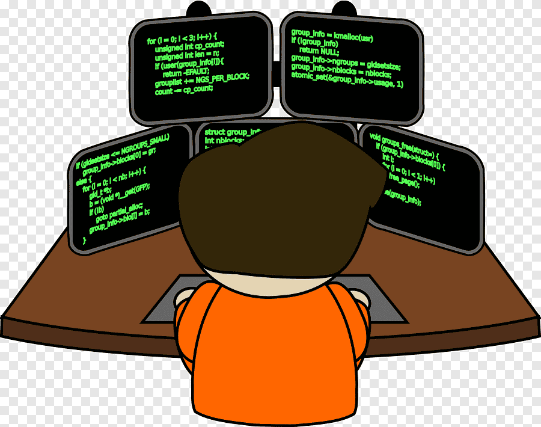

Sowhith Donti

Summary:
To work with an organization which is progressive and giving me an opportunity to hone my skills while continuously contributing to the growth of the organization and thus my career growth.
Education
-
B-TECH in Electronics and Communication Engineering during 2012-2016 from Siddartha Institute of Science& Technology Puttur Affiliated to JNTUA Anatapur.
-
Intermediate during 2010-2012 from Board of Intermediate Education.
-
SSC Rami Reddy Ralayaseema High School 2010.
Work Experience
Skills
- C#
- ASP.NET
- Entity Framework
- Web API
- ASP.NET MVC
Other